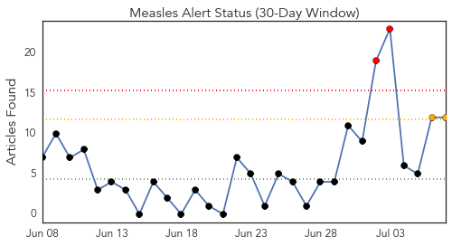
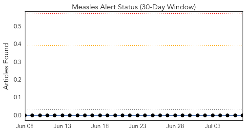
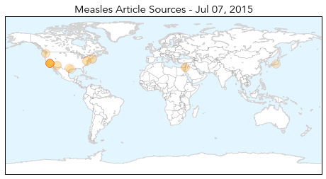
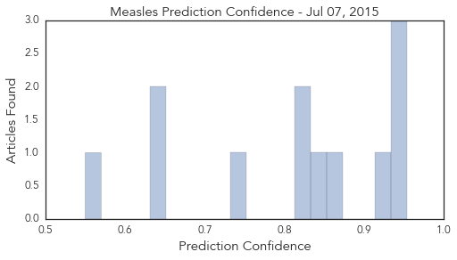

Measles
30-Day Web Trend
2 alerts, 2 warnings

30-Day Twitter Trend
0 alerts, 0 warnings

Article Locations
Article Confidences
Top Articles:
- 0.954
- Wash. reports first US measles death in 12 years
- 0.944
- ZERO U.S. Measles Deaths in 10 Years, but Over 100 Measles Vaccine Deaths Reported
- 0.943
- Martha's Vineyard Measles Case Was Misidentified; Hospital to Review Protocols
- 0.931
- Measles Death Points to Need for Herd Immunity
- 0.866
- Here's Why : Discovery News
- 0.846
- First Death From Measles In U.S. In 12 Years
- 0.822
- American woman who died of measles was previously vaccinated against measles… total failure of vaccine covered up by quack vaccine propagandists
- 0.816
- Measles death July 2015: Woman dies of measles in Washington
- 0.751
- Why You Cannot Trust the Mainstream Media for Accurate Vaccine News
- 0.644
- Steven Abrams: Pediatricians are right to protect patients against the unvaccinated
- 0.640
- Autism in the absence of MMR vaccine
- 0.550
- Almost all doctors admit they work sick, study shows
Top Tweets:
-
No tweets found for Jul 07, 2015
Influenza
30-Day Web Trend
0 alerts, 0 warnings

30-Day Twitter Trend
0 alerts, 0 warnings

Article Locations

Article Confidences

Top Articles:
- 0.995
- Flu Scan for Jul 06, 2015
- 0.914
- flu season?
- 0.898
- Ansun BioPharma Publishes Effects of FluDase™ on Drug Resistant Flu
- 0.852
- Record presentations to Hawke’s Bay Emergency Department
- 0.840
- Parliament calls for urgent steps to contain Avian flu
- 0.754
- US poultry industry devastated by bird flu
- 0.751
- July 6, 2015 Archives
- 0.751
- July 6, 2015 Archives
- 0.751
- July 6, 2015 Archives
- 0.735
- flu season?
- 0.573
- Sick doctors admit to spreading infections at work
Top Tweets:
-
No tweets found for Jul 07, 2015